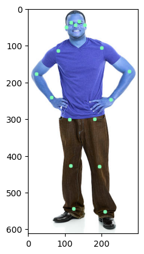
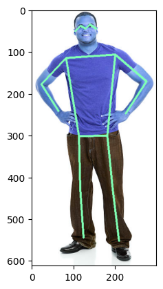

Body pose estimator#
# Imports
import cv2
import numpy as np
import torchvision
from torchvision import transforms as T
import matplotlib.pyplot as plt
c:\python39\lib\site-packages\tqdm\auto.py:21: TqdmWarning: IProgress not found. Please update jupyter and ipywidgets. See https://ipywidgets.readthedocs.io/en/stable/user_install.html
from .autonotebook import tqdm as notebook_tqdm
# Create a model object from the keypointrcnn_resnet50_fpn class
model = torchvision.models.detection.keypointrcnn_resnet50_fpn(pretrained=True)
# Call the eval() method to prepare the model for inference mode.
model.eval()
# Create the list of keypoints.
keypoints = ['nose','left_eye','right_eye',\
'left_ear','right_ear','left_shoulder',\
'right_shoulder','left_elbow','right_elbow',\
'left_wrist','right_wrist','left_hip',\
'right_hip','left_knee', 'right_knee', \
'left_ankle','right_ankle']
# Load image
img1 = cv2.imread("../../data/running_person.jpg")
img2 = cv2.imread("../../data/standing_person.jpg")
img = img2
# Preprocess the input image
transform = T.Compose([T.ToTensor()])
img_tensor = transform(img)
# Forward-pass the model, the input is a list, hence the output will also be a list
output = model([img_tensor])[0]
def draw_keypoints_per_person(img, all_keypoints, all_scores, confs, keypoint_threshold=2, conf_threshold=0.9):
# initialize a set of colors from the rainbow spectrum
cmap = plt.get_cmap('rainbow')
# create a copy of the image
img_copy = img.copy()
# pick a set of N color-ids from the spectrum
color_id = np.arange(1,255, 255//len(all_keypoints)).tolist()[::-1]
# iterate for every person detected
for person_id in range(len(all_keypoints)):
# check the confidence score of the detected person
if confs[person_id]>conf_threshold:
# grab the keypoint-locations for the detected person
keypoints = all_keypoints[person_id, ...]
# grab the keypoint-scores for the keypoints
scores = all_scores[person_id, ...]
# iterate for every keypoint-score
for kp in range(len(scores)):
# check the confidence score of detected keypoint
if scores[kp]>keypoint_threshold:
# convert the keypoint float-array to a python-list of integers
keypoint = tuple(map(int, keypoints[kp, :2].detach().numpy().tolist()))
# pick the color at the specific color-id
color = tuple(np.asarray(cmap(color_id[person_id])[:-1])*255)
# draw a circle over the keypoint location
cv2.circle(img_copy, keypoint, 5, color, -1)
return img_copy
keypoints_img = draw_keypoints_per_person(img, output["keypoints"], output["keypoints_scores"], output["scores"], keypoint_threshold=2)
# Show
plt.imshow(keypoints_img)
plt.show()

def get_limbs_from_keypoints(keypoints):
limbs = [
[keypoints.index('right_eye'), keypoints.index('nose')],
[keypoints.index('right_eye'), keypoints.index('right_ear')],
[keypoints.index('left_eye'), keypoints.index('nose')],
[keypoints.index('left_eye'), keypoints.index('left_ear')],
[keypoints.index('right_shoulder'), keypoints.index('right_elbow')],
[keypoints.index('right_elbow'), keypoints.index('right_wrist')],
[keypoints.index('left_shoulder'), keypoints.index('left_elbow')],
[keypoints.index('left_elbow'), keypoints.index('left_wrist')],
[keypoints.index('right_hip'), keypoints.index('right_knee')],
[keypoints.index('right_knee'), keypoints.index('right_ankle')],
[keypoints.index('left_hip'), keypoints.index('left_knee')],
[keypoints.index('left_knee'), keypoints.index('left_ankle')],
[keypoints.index('right_shoulder'), keypoints.index('left_shoulder')],
[keypoints.index('right_hip'), keypoints.index('left_hip')],
[keypoints.index('right_shoulder'), keypoints.index('right_hip')],
[keypoints.index('left_shoulder'), keypoints.index('left_hip')]
]
return limbs
limbs = get_limbs_from_keypoints(keypoints)
def draw_skeleton_per_person(img, all_keypoints, all_scores, confs, keypoint_threshold=2, conf_threshold=0.9):
# initialize a set of colors from the rainbow spectrum
cmap = plt.get_cmap('rainbow')
# create a copy of the image
img_copy = img.copy()
# check if the keypoints are detected
if len(output["keypoints"])>0:
# pick a set of N color-ids from the spectrum
colors = np.arange(1,255, 255//len(all_keypoints)).tolist()[::-1]
# iterate for every person detected
for person_id in range(len(all_keypoints)):
# check the confidence score of the detected person
if confs[person_id]>conf_threshold:
# grab the keypoint-locations for the detected person
keypoints = all_keypoints[person_id, ...]
# iterate for every limb
for limb_id in range(len(limbs)):
# pick the start-point of the limb
limb_loc1 = keypoints[limbs[limb_id][0], :2].detach().numpy().astype(np.int32)
# pick the start-point of the limb
limb_loc2 = keypoints[limbs[limb_id][1], :2].detach().numpy().astype(np.int32)
# consider limb-confidence score as the minimum keypoint score among the two keypoint scores
limb_score = min(all_scores[person_id, limbs[limb_id][0]], all_scores[person_id, limbs[limb_id][1]])
# check if limb-score is greater than threshold
if limb_score> keypoint_threshold:
# pick the color at a specific color-id
color = tuple(np.asarray(cmap(colors[person_id])[:-1])*255)
# draw the line for the limb
cv2.line(img_copy, tuple(limb_loc1), tuple(limb_loc2), color, 3)
return img_copy
# overlay the skeleton in the detected person
skeletal_img = draw_skeleton_per_person(img, output["keypoints"], output["keypoints_scores"], output["scores"],keypoint_threshold=2)
# Show
plt.imshow(skeletal_img)
plt.show()
